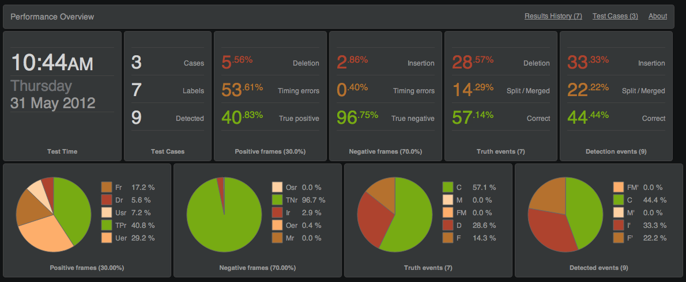
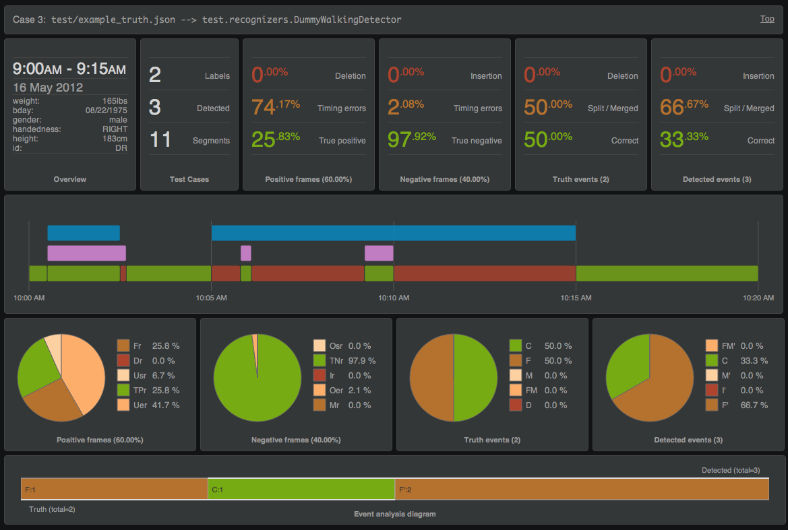

A performance metrics dashboard for continuous context recognition systems
We've been investigating systems for automated recognition of places, visits, paths, and activities from mobile sensor data, and have developed these tools to help evaluate the feasibility and quality of various approaches. This project provides a framework for: 1) defining ground truth data from labeled streams of sensor data, 2) interfacing with context recognizer(s), and 3) scoring and visualizing recognizer performance based on [1].
This section describes a simplified development lifecycle for continuous context recognition systems and explains how this framework fits in. For our purposes, continuous context recognition systems infer/predict the context of a user and/or device, from periodic samples of raw sensor data. A context recognizer outputs/updates labeled time intervals that encode the prediction/esitimation of the context over the time interval, for example: HOME, WORK, RUNNING, WALKING, BIKING, DRIVING.
Ground truth collection - To help drive the development, we start with the collection of ground truth corpora consisting of raw data files (typically collected from sensors carried or worn by a subject) and ground truth labels provided by researchers, subjects, click workers, or other observers, over intervals of the data. The labels provide the truth about what the user (or device) was doing during the labeled interval, and are essential for the development and evaluation of systems for classification, detection, or recognition.
Recognizer development - Now that we have some raw data and ground truth, we begin developing our recognition system. Here, we mainly focus on binary classification, and try to build and test various recognizers that can infer the context of the user from some raw data streams. We implement the abstract recognizer interface that allows user-defined classifiers to be plugged in to the test framework.
Evaluation - Once we have candidate recognizers ready for testing, we feed raw data from ground truth cases to specified recognizers (implementing the recognizer interface) and analyze the returned results. The recognizer results are compared with the ground truth labels, detailed performance metrics are computed, test results are logged, and visualizations are rendered for inspection.
Iteration - Based on the performance results, we may return to step 2 and tweak parameters, modify code, try something new, etc. Alternatively, we can return to step 1 to gather more labeled data and refine or scale up the testing. Once we are satisfied with the results over a diverse set of test cases, we begin to productize.
The command line interface and scoring rules are implemented in python 2.7. The visualizations are made with javascript, jQuery, and d3.js. iso8601.py is used for date parsing in python
Raw data files contain timestamped sensor and/or behavioral data logged (continuously or periodically) from one or more devices associated with a test subject. We often use mobile phone sensors like WLAN, GSM, GPS, magnetometer, Bluetooth, ambient light, microphone, etc, but may also include data from other sensors in the environment or worn on the body, or from external data sources. Raw data records are encoded in an application specific manner and thus should only be passed to recognizers that understand the format.
Ground truth files encode labels containing the precise start and end times of specific activities performed by the user during the raw data collection. The ground truth label files are encoded in json and have the following form:
The following table describes the various fields of ground truth items:
data_path - glob expression specifying raw data files for this casedescription - description of test case (optional)sw - client software identifiert1 - earliest t1 of data record, label, or detectedt2 - latest t2 for data record, label, or detectedhw - device hardware identifierdevice - device model (optional)subject - information about the human subject (optional)labels - list of labeled intervals over the raw data. Each item in the list contains:
t1 - isotime timestamp of label startt2 - isotime timestamp of label endlabel - A string constant that labels the context. See list of pre-defined labelsbody_position - String constant identifying the where the device was carried on the body (optional)data - label-specific data (optional)How ground truth labels are initially captured is out of the scope of this document, but there are various approaches such as verbal self-reporting, user diaries, mobile phone-based labeling tools, crowdsourced labeling, and following subjects around with clipboards.
Here are some predefined labels for various context items:
AT_HOMEAT_WORKIN_PLACE - Visiting a specific place. The data portion of IN_PLACE labels are dictionaries that may contain the following optional fields:
id - The place id name - The place name address - The place address ll - Approximate ll of the visit desc - A description of the place ENTERING_PLACEEXITING_PLACEWALKINGRUNNINGBIKINGSKATEBOARDINGSNOWBOARDINGSITTINGSTANDINGSLEEPINGDRIVINGIN_CARON_TRAINON_BUSON_BOATON_PLANERecognizers process time-ordered chunks of raw data records and return lists of recognizer results. Recognizers MUST implement the recog.AbstractRecognizer interface to be compatible with this framework. The recog.AbstractRecognizer python class is shown here:
Raw data are fed to a recognizer using the process() method. Results are retrieved using the get_results() method and example is shown in recognizer results. The labels_supported() method is used to filter the ground truth labels to include only those supported by the specified recognizer before the results are compared.
The get_results() method returns lists of dictionaries containing the labeled time intervals. For example, recognizer results have the following form (after json-encoding):
A test run typically contains the following steps:
The perfboard command line utility is used to run performance tests.
perfboard.py [-h] [--outpath OUTPUT_PATH] [--norotate] --recognizers RECOGNIZERS TRUTH_FILE [TRUTH_FILE ...]
For example, to test the test.recognizers.DummyWalkingDetector against the example_truth.json test case:
./perfboard.py --recognizers=test.recognizers.DummyWalkingDetector test/example_truth.json
By default, result objects are written to static/scores.json and can then be retrieved by the performance dashboard via ajax.
Existing scores file are copied to timestamped filenames before new results are written and a list of scores history is updated in the static/scores_list.json file. The dashboard reads the scores list and presents it in a pulldown menu. To disable the rotation of scores to timestamped files use the --norotate option.
To run the example tests conveniently, use:
test/test.sh
Final test results are encoded in a object that combines all ground truth items, results from recognizer get_results(), and all performance metrics. For example, test results from the above example might look like the following:
The result object has the following fields:
t: timestamp of the test run in isotimestats: dictionary of total number of ground truths truth_count, recognizer results detected_count, and scored segments segment_count from all test casesresults: list of the scored test case results. Each result object has the same form as a ground truth item, with additional keys:
detected: list of recognizer results for the testscores: dictionary containing event scores, frame scores, and various stats for the testrecognizer: field specifying which recognizer was used in the testevent_score: field containing the event score for items in labels and detectedrecognizers: list of recognizers that were used in the testscores: dictionary of aggregate scores from all ground truth cases combined. The dashboard can be accessed by running a web server and serving the perfboard/static dir and visiting the index.html file there.
Note: The dashboard won't work when served using file:// url rather than http:// url (for ajax security reasons).
The top of the dashboard shows an overview of results from all the test cases in a test run:

The overview shows the test time, total number of ground truth cases, total number of ground truth labels, total number of items detected, and the overall stats for frame and event scores. Frame scores report the fraction of time that the detection output matches the ground truth. Positive frames are those where we have a ground truth prediction for the frame, negative frames are those where there is no ground truth label (null-class). Overview statistics and pie charts for positive frames, negative frames, ground truth events, and detected events show the rates of the various kinds of errors.
The top bar also provides a pull-down selector to jump to individual test results, and another pull-down selector for rendering other result sets.
Each ground truth case in a result set is rendered in a result detail panel similar to that shown here:

The result detail shows similar statistics and pie charts for positive frames, negative frames, ground truth events, and detected events, but also includes a time interval diagram and event analysis diagram. The time-interval diagram shows the truth, detection, and segment time intervals and corresponding scores. Hovering over the intervals will show the timing, labels, and scores. The event analysis diagrams shows the truth and detected event scores in a single chart.
The metrics used in test results are based on [1]. This section briefly describes some of the metrics.
Event scores are assigned to ground truth labels and also to recognizer results. This table provides summary of score types described in [1]:
D - DeletionF - FragmentedM - MergedFM - Fragmented and mergedC - CorrectI - InsertionF' - Fragmenting returnM' - Merging returnFM' - Fragmenting and merging returnScores are also assigned to segments as described in [1]. Segments are scored with one of the following four types:
TP - True PositiveTN - True negativeFP - False PositiveFN - False NegativeFor FP and FN segments, an error type field error is also present with one of the following eight error types:
Us - Underflow startUe - Underflow endOs - Overflow startOe - Overflow endF - FragmentingM - MergingI - InsertionD - Deletion[1] Ward, J. A., Lukowicz, P., & Gellersen, H. W. (2011). Performance metrics for activity recognition. ACM Transactions on Intelligent Systems and Technology (TIST), 2(1), 1-23. doi:10.1145/1889681.1889687. PDF